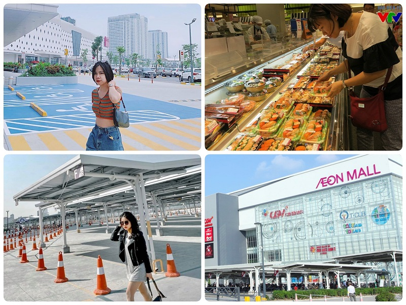
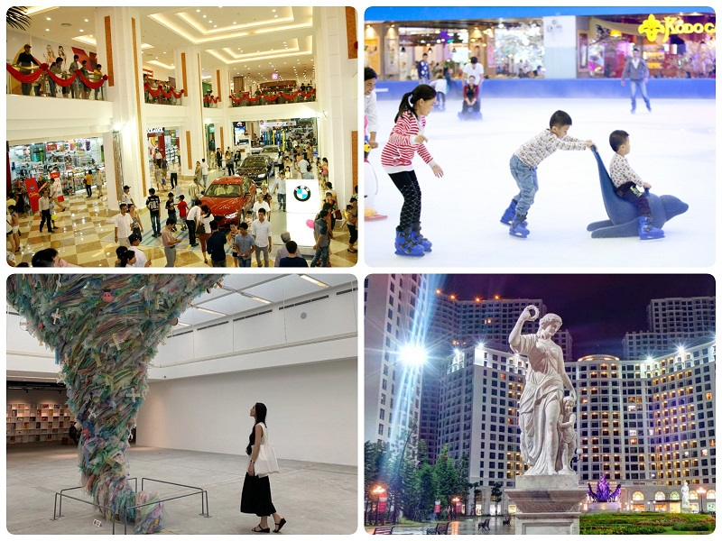
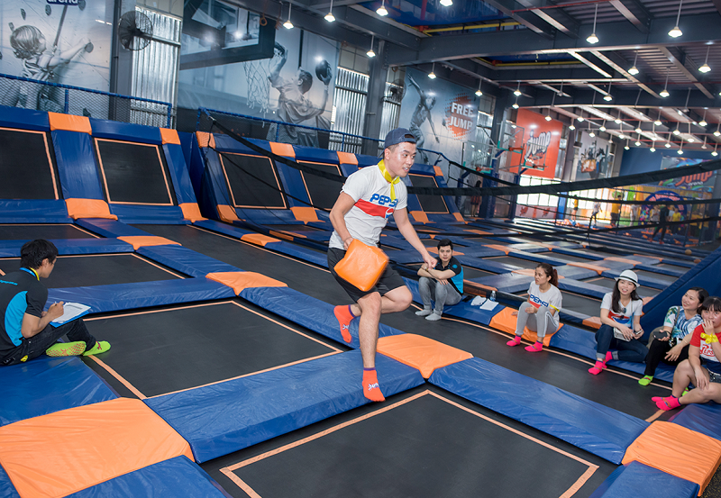
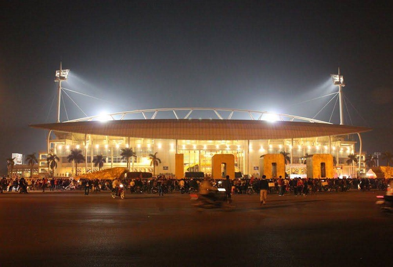
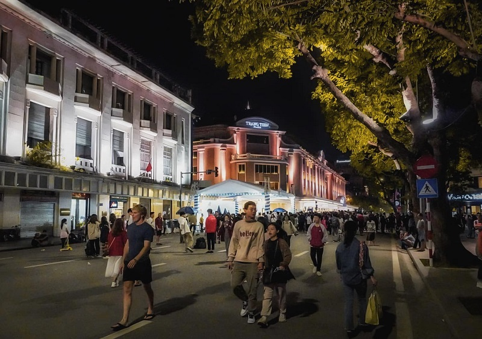

Địa điểm vui chơi ở Hà Nội nổi tiếng nhất, được ưa chuộng nhất có lẽ chính là các trung tâm thương mại Aeon. Không gian rộng lớn, nhiều góc chụp ảnh “đỉnh của đỉnh”, tràn ngập đồ ăn ngon, các khu mua sắm, khu vui chơi, rạp chiếu phim… Không còn nghi ngờ gì nữa, Aeon Mall đích thực là khu vui chơi Hà Nội dành cho bất cứ ai. Hiện tại ở Hà Nội đang có 2 TTTM Aeon tất cả, một ở Long Biên và một ở mạn Hà Đông
Royal City là trung tâm thương mại khá nổi tiếng và không còn xa lạ gì với người dân thủ đô. Ngoài không gian của những siêu thị, các gian hàng cao cấp, đây còn biết đến là khu vui chơi giải trí dưới lòng đất hấp dẫn bậc nhất của thủ đô. Đến với Royal City, bạn sẽ được thoải mái check in với lối kiến trúc đậm phong cách châu Âu, và tham gia các trò chơi như trượt băng, công viên nước, rạp chiếu phim cũng như thưởng thức các món ăn hấp dẫn ở làng ẩm thực.
Nhắc đến các địa điểm vui chơi ở Hà Nội đang được ưa chuộng hiện nay, có lẽ cái tên Jump Arena – khu vui chơi bạt nhún là không thể thiếu. Jump Arena là khu vui chơi ở Hà Nội được tích hợp các sân chơi bạt nhún, phòng gym, phòng thể dục thể thao… cùng nhiều hoạt động hấp dẫn khác. Có rất nhiều trò chơi thú vị đang chờ bạn khám phá: nhảy tự do, lộn nhào, bật xa, leo núi, bóng né, đu dây, thử thách ninja..
Không giống với những địa điểm vui chơi Hà Nội hiện đại khác, khoảng trống trước sân vận động Mỹ Đình là nơi yêu thích của người thả diều với nhiều hình thù ngộ nghĩnh như siêu nhân, bạch tuộc hay đàn voi với những sắc màu sặc sỡ tạo nên khung cảnh yên bình và thú vị. Đặt chân đến với địa điểm đi chơi ở Hà Nội buổi tối này, bạn sẽ được tràn ngập trong không khí tuổi thơ với cánh diều và cảm nhận được không khí thoải mái giữa một Hà Nội sầm uất.
Một trong những địa điểm tham quan hấp dẫn hàng đầu ở Hà Nội chính là phố đi bộ Hồ Gươm, một con phố hoạt động vào những ngày cuối tuần, là nơi để mọi người vui chơi thư giãn và sống chậm lại giữa những con đường hối hả của thủ đô. Có lẽ phố đi bộ Hà Nội sẽ là đáp án cho bất cứ người dân thủ đô hoặc du khách khi đến Hà Nội và đang băn khoăn không biết nên đi đâu, chơi gì thú vị nhất.
